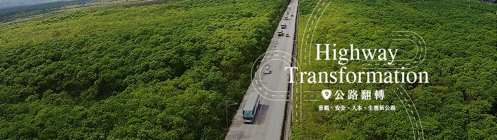

跳至內容區
:::
回首頁
網站導覽
聯絡我們
交通部公路總局
查詢區開關
關閉
熱門關鍵字：
關鍵字ㄧ
關鍵字二
關鍵字３
願景構想
計畫緣起
本案願景
規劃理念
測試多層選單
測試多層選單
測試多層選單
測試多層選單
測試多層選單
測試多層選單
測試多層選單測試多層選單
測試多層選單
道路安全改善構想
景觀規劃構想
IFLA景觀大賞
測試多層選單
測試多層選單
資源分析
聚落與產業
觀光遊憩
生態敏感
交通安全
景觀資源
工程資訊
整體路段規畫原則
計畫路線
工程計畫書
工程技術百科
多層測試
多層測試
多層測試
212K~214K木瓜溪橋改建工程
242K~243K萬里溪橋改建工程
253K~260K(大興至瑞源)道路拓寬工程
260K~268K(富源至瑞北)道路拓寬工程
273K~280K(瑞祥至三民段)道路拓寬工程
282K~284K道路拓寬工程
285K~287K(三軒至大禹段)道路拓寬工程
287K~292K(大禹至玉里段)道路拓寬工程
316K~319K(富里至縣界段)道路拓寬工程
玉里及富里外環道景觀改善工程
瑞穗外環道景觀改善工程
xxx-3
xxx-2
xxx-1 end
防災作為
緊急應變計畫
緊急通報聯絡人
防災特報
環境維護
環境保護
景觀維護
路樹管理
參與回饋
公民參與
意見回饋
常見問答
首長信箱
論壇
訊息公告
活動訊息
測試多層選單
＊＊最後一個
＊最後一個
行動版側欄開關

:::
首頁
節點一
台9線316K+575~319K+820富里至富南段
台9線316K+575~319K+820富里至富南段
標案基本資料
水土保持
施工相片
公開資訊
路樹管理
工程簡介
本工程位於花蓮縣富里鄉境內，工程範圍自台9線316K+575起至319K+820(新樁號里程301K+089.184～304K+334.184)止，北起已完成拓寬之台9線富里外環道南端，南迄花蓮縣與臺東縣縣界之縣界橋，路線全長約3,245公尺，預計改善路面寬30公尺，路基總長約3,245公尺，工程項目包括：道路、橋梁、擋土牆、排水、景觀、植栽、號誌、公路照明及相關交通維持、安全衛生、環境保護等附屬工程。
起迄里程
316K+575~319K+820
設施長度
路段全長3,245公尺，包含縣界橋長80公尺、懸臂式擋土牆長約2,335公尺。
設計單位
台灣世曦工程顧問股份有限公司
監造單位
中興工程顧問股份有限公司
承包廠商
興玉輝營造股份有限公司
契約金額
NT$ 623,874,217 元 (變更後)
開工日期
民國 109 年 09 月 29 日
預定完工日期
民國 112 年 10 月 01 日
工程進度
28.91%
top